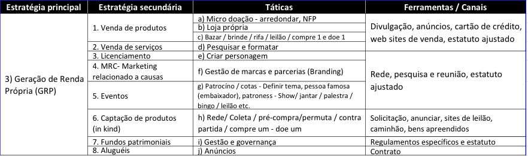

Estratégia 3: Geração de Renda Própria - GRP - parte 2/3
07 de Agosto de 2017 às 07:00
Nesta estratégia principal veremos empresas, pessoas, fundações e organizações que aportam recursos financeiros, materiais e humanos pela causa da OSC e para ter um produto ou serviço em troca, sem a necessidade de mostrar ou escrever um projeto.

Projetos de geração de renda são empreendimentos capazes de gerar receita e resultados financeiros positivos para a organização, principalmente por meio da venda de produtos ou serviços relacionados às causas sociais. Uma característica importante dessa estratégia, além da inovação social, é o auxílio à sustentação financeira da organização por meio da geração de recursos desvinculados de projetos, os quais podem ser aplicados livremente, tanto no operacional como em investimentos. Todas as estratégias secundárias desta estratégia: Venda de produtos e serviços, MRC, Eventos, Captação de produtos (in kind) e alugueis trazem recursos livres para a organização como um todo e não para um projeto específico. Além disso, também não demandam uma contrapartida atrelada ao recurso.
Analisando a tabela acima vemos 8 estratégias secundárias que iremos explicar uma a uma.
Clique no link para ler o artigo publicado em 10/07/17 sobre as ESTRATÉGIAS 1 E 2
ESTRATÉGIA 3: LICENCIAMENTO – ROYALTIES
Pouco utilizada no Brasil, esta estratégia requer a criação de um personagem que vai estar na embalagem dos produtos a serem vendidos. Uma participação nas vendas entre 3% e 10% é o pagamento que as Organizações recebem. Como exemplo citamos o shampoo com a imagem do Senninha que gera recursos para o IAS – Instituto Ayrton Senna. Veja mais aqui.
ESTRATÉGIA 4: MARKETING RELACIONADO A CAUSAS – MRC
Por meio dessa estratégia empresas e organizações da sociedade civil formam uma parceria para comercializar uma imagem, produto ou serviço, em benefício dos dois lados, ou seja, a empresa ganha agregando mais uma qualidade ao produto, ampliando as estratégias de marketing e vendendo mais e as OSCs mobilizam recursos financeiros e humanos e ganham maior visibilidade. É uma ferramenta interessante para a divulgação da marca da OSC e também para a mobilização de recursos propriamente dita.
No Brasil, o termo MRC tem sido utilizado de forma equivocada por algumas empresas para designar simples aportes financeiros de empresas para OSCs. Nos Estados Unidos, as empresas estão envolvidas há muito tempo com o apoio a comunidades. De acordo com a especialista na área, Jocelyne Daw, quando os primeiros programas de MRC fizeram sucesso, a relação entre as empresas e o Terceiro Setor passou por uma mudança radical. Iniciado há mais de 25 anos, mais precisamente em 1984, com a campanha da reforma da Estátua da Liberdade, hoje o MRC representa uma nova forma de relacionamento, que auxilia nos resultados esperados e nas políticas de responsabilidade social das empresas.
Para colocar em prática uma iniciativa de MRC a organização deve observar os critérios éticos relacionados com a natureza da atividade da empresa (histórico da atitude da empresa com relação à comunidade, aos funcionários, ao meio ambiente, Governo e demais stakeholders), além de estar atenta a que tipo de produto a imagem institucional estará associada).
Existem vários modelos vitoriosos que podem ser estudados previamente, como as parcerias Instituto Ipê / Alpargatas (Havaianas), GRAACC / MacDonald´s (Mac Dia Feliz) e Instituto Se Toque / Santander (seguro de vida "mulher").
Vale lembrar que existe anualmente, um Congresso Mundial, em Chicago, sobre Marketing Relacionado a Causas. Maiores informações aqui.
ESTRATÉGIA 5: EVENTOS para mobilização de recursos
Esta estratégia secundária da GRP que grande parte das organizações sem fins lucrativos utiliza para arrecadar fundos. Infelizmente, quando mal planejados, podem absorver muito trabalho e arrecadar pouco ou nada, o que é frustrante para todos os envolvidos.
Os eventos podem ter várias funções: divulgar a causa, captar recursos, divulgar a missão e as atividades da organização, bem como dar reconhecimento a doadores, membros de renome, diretores e voluntários (homenagens). Os eventos são também ótimos para a ampliação do banco de relacionamentos institucional com o abastecimento de informações importantes sobre os participantes. Recomenda-se, ao final dos eventos, o envio de carta de agradecimento e convite para participação do quadro de mantenedores.
Assim, eventos específicos para captação de recursos exigem planejamento de longo prazo, principalmente quando são definidas metas e resultados arrojados. Na maioria das vezes também exigem busca de patrocínio, envolvimento de pessoal capacitado, parcerias, venda de convites etc.
Planejar e implementar um evento especial é como gerenciar um pequeno negócio. Um alto nível de habilidade organizacional e conhecimento sobre o assunto são necessários, seja para reservar o local; contratar pessoal; divulgar; imprimir, distribuir e disponibilizar (vender se for o caso) os ingressos; ampliar a receita e minimizar os custos. Soma-se a isto, a necessidade de organizar e motivar um grupo de voluntários e funcionários a fazerem bem o trabalho relacionado ao evento. Ter consciência da necessidade de planejamento e dos desafios da empreitada é o início do sucesso nesta estratégia de mobilização de recursos.
**Clique e confira a parte 1 e a parte 3 deste artigo.
Michel Freller empreendedor social, palestrante, professor, consultor e facilitador. Mestre em Administração pela PUC-SP, atua junto as OSCs com ênfase em planejamento e mobilização de recursos com e sem incentivos. Fundador da Criando Consultoria ltda.
Publicado por

Notícias mais populares
Gestão
Em agosto de 2017, a revista ÉPOCA e o Instituto Doar divulgaram a primeira ediç&...
Contexto e tendências
Criado para tornar mais transparentes as parcerias entre a administração públic...
Profissional captador
A captação de recursos é fundamental para a sustentabilidade de uma organiza&cc...